Nissan Skyline RS (KDR30)
2024 - HW J-IMPORTS - 44/250
The '82 Nissan Skyline R30 is an iconic car, but lesser known than its more famous forbearers the C10 "Hakosuka" GT-X , C110 "Kenmeri" GT-R, and the R30's later successor, the R32 GT-R. The R30 Skyline's claim to fame was on the Japanese TV series "Seibu Keisatsu" in the 1980s and later with Jay Kho's 'Wild Card' DR30 RS Turbo Skyline.
The base of the casting reads '82 Nissan Skyline R30, the name it was originally released with.

'91 Nissan Sentra SE-R
2026 - COMPACT KINGS - 5/5
The Nissan Sentra is a series of compact automobiles produced by Nissan since 1982, available in a number of different body styles. The Sentra name was not used in Japan, although it was used in numerous other countries.
The B13 Nissan Sentra, the car's third generation, began production in 1990 and was produced until 1994. The B13 gained a cult following in Mexico, where it was named the Tsuru and produced until 2017. The SE-R was a sportier two-door version of the Nissan Sentra, using a 2.0L SR20DE inline-4 mated to a 4-speed automatic.

NISSAN SILVIA (S13)
2025 - NEON SPEEDERS - 3/8
The Nissan Silvia (S13) is based on the S13 generation of the Silvia series dating back to 1965. The S13 coupe and hatch was produced from 1988 to 1994. The coupe version has fixed headlights.
The casting is based on Chris Marion's 240SX with a deco inspired by the S13 that ran during the 1993 IMSA GT Challenge Fuji JGTC. Modifications include custom aftermarket Fifteen52 RSR wheels, Falken tires, Sparco steering wheel, aftermarket bucket seats with a welded roll cage, Rocket Bunny 1.0 rear spoiler, a front end conversion from the original S13 coupe, a SR20DET engine swap from the 180SX, and K&W shocks and springs. Marion sold the car in 2023; it is currently owned by former Hot Wheels designer Jun Imai.

Nissan Maxima Drift Car
2023 - HW J-IMPORTS - 47/250
The Nissan Maxima is a full-sized car produced by Nissan since 1980, now in its eighth generation. It is offered as Nissan's flagship sedan mainly in North America, the Middle East and China.
This casting is intended to represent a G910 Maxima station wagon modified for drift usage, with an RB26 engine from a Nissan Skyline in place of the L24E inline-6. This casting marks the debut of the FC3 wheel.
Of note was that a Maxima was Hot Wheels designer Dmitriy Shakhmatov's first car in the United States.

NISSAN SKYLINE GT-R (BCNR33)
2024 - Fast & Furious: Racing - 1/5
The Nissan Skyline GT-R is a series of sports cars based on the Nissan Skyline range, produced from 1968 to 2002. The car's fourth generation, designed by Kozo Watanabe and internally designated the E-BCNR32 (shortened to R33), was introduced in 1995. Essentially a higher-performance version of the standard R33 Skyline, the R33 was powered by a 2.6L RB26DETT twin-turbocharged inline-6, mated to a 5-speed manual; the car's engine was notably very similar to that of its predecessor, the R32, using the same turbochargers and gearbox but had stronger synchros. The car is typically rated at 276 horsepower. Production ended in 1998 with 16,668 produced, with the car replaced by the R34. In recent years, the R33 has become a cult classic due to its appearance in various forms of media and has attained a sizable following among the various echelons of Japanese automobiles.
The base of the casting reads Nissan Skyline GT-R R33, the name the casting was initially released with.
The 2025 release is based on HKS T-002, an R33 built by HKS to break records in various circuits; the car set a 58.7 second lap time at Tsukuba Circuit with Shuji Matsuda at the wheel. The car was then restored in 2019 to be displayed at that year's Tokyo Auto Salon and was later displayed at SEMA 2023.

NISSAN SKYLINE GT-R (BCNR33)
2024 - Car Culture: Modern Classics - 4/5
The Nissan Skyline GT-R is a series of sports cars based on the Nissan Skyline range, produced from 1968 to 2002. The car's fourth generation, designed by Kozo Watanabe and internally designated the E-BCNR32 (shortened to R33), was introduced in 1995. Essentially a higher-performance version of the standard R33 Skyline, the R33 was powered by a 2.6L RB26DETT twin-turbocharged inline-6, mated to a 5-speed manual; the car's engine was notably very similar to that of its predecessor, the R32, using the same turbochargers and gearbox but had stronger synchros. The car is typically rated at 276 horsepower. Production ended in 1998 with 16,668 produced, with the car replaced by the R34. In recent years, the R33 has become a cult classic due to its appearance in various forms of media and has attained a sizable following among the various echelons of Japanese automobiles.
The base of the casting reads Nissan Skyline GT-R R33, the name the casting was initially released with.
The 2025 release is based on HKS T-002, an R33 built by HKS to break records in various circuits; the car set a 58.7 second lap time at Tsukuba Circuit with Shuji Matsuda at the wheel. The car was then restored in 2019 to be displayed at that year's Tokyo Auto Salon and was later displayed at SEMA 2023.

NISSAN 350Z CUSTOM
2026 - THE FAST & THE FURIOUS: TOKYO DRIFT - 1/5
The Nissan 350Z, known as the Fairlady Z in Japan and internally designated the Z33, is a two-seat sports car manufactured Nissan from 2002 to 2009. Designed by Ajay Panchal, Diane Allen and Mamoru Aoki, the car's roots can be traced back to the 240Z Concept from 1998, which was slated to be put into production but was canceled due to lukewarm reception. Replacing the 300ZX, the 350Z was launched in Japan at Nissan Blue Stage dealerships in July 2002 and in the United States the following month, both as a 2002 model, in base, Enthusiast, Performance, Touring and Track trims. Production ended in 2009, when the car was replaced by the 370Z.
This is a depiction of a Nissan 350Z fitted with a NISMO Aero Package.

Nissan Silvia (S15)
2026 - THE FAST & THE FURIOUS: TOKYO DRIFT - 2/5
The Nissan Silvia S15 is a Hot Wheels casting which debuted in 2018 in the Hot Wheels Replica Entertainment - Forza series. It was designed by Hot Wheels Marketing Director Jimmy Liu and designer Mark Jones as it is one of Liu's personal favorite real-life cars. It also debuted the Real Rider wheel, RR6SPM.
A modified version of the Nissan Silvia S15 debuted in 2006.

Nissan Silvia (S15)
2025 - FAST & FURIOUS: GRAPHIC REMIX - 4/5
The Nissan Silvia S15 is a Hot Wheels casting which debuted in 2018 in the Hot Wheels Replica Entertainment - Forza series. It was designed by Hot Wheels Marketing Director Jimmy Liu and designer Mark Jones as it is one of Liu's personal favorite real-life cars. It also debuted the Real Rider wheel, RR6SPM.
A modified version of the Nissan Silvia S15 debuted in 2006.

Nissan Skyline GT-R (BNR32)
2025 - HW SCREEN TIME - 4/250
The Nissan Skyline GT-R is a series of sports cars based on the Nissan Skyline range, produced from 1968 to 2002. The car's third generation, designed by Naganori Ito and internally designated the E-BNR32 (shortened to R32), was introduced in 1989; this was the first car to bear the Skyline GT-R name after a sixteen-year absence. Designed for Group A racing, the car was powered by a 2.6L RB26DETT twin-turbocharged inline-6 putting down power on all four wheels; the car was so dominant in Group A touring car racing an Australian magazine nicknamed the car "Godzilla", a name which has since stuck and is now used to refer to the R3x-series of Nissan Skyline GT-Rs and by extension the later GT-R. Production ended in 1994 with 43,937 produced, with the car replaced by the R33. In recent years, the R32 has become a cult classic due to its appearance in various forms of media and has attained a sizable following among the various echelons of Japanese automobiles.
The base of the casting reads Nissan Skyline GT-R R32.

Nissan Skyline 2000GT-R LBWK
2024 - THEN AND NOW- 191/250
This casting is based on a Nissan C110 Skyline GT-R fitted with a Liberty Walk bodykit owned by Liberty Walk founder Wataru Kato.
This casting is largely based on the Nissan Skyline H/T 2000GT-R casting designed by Jun Imai, featuring an identical interior and base detailing and very similar body lines and contouring; despite their outwardly similar appearance parts cannot be swapped with each other apart from the interior as the LBWK casting has a slightly smaller rear window and a very different base and body construction.

LB Super Silhouette Nissan Silvia (S15)
2023 - HW MODIFIED- 17/250
LB-Super Silhouette S15 SILVIA Complete Body Kit is the designation for a body kit designed by Liberty Walk, a Japanese aftermarket automotive company, intended to be fitted on the Nissan Silvia. It consists of a front bumper, rear bumper and diffuser, rear wing, wide fenders and side skirts and a new hood and trunk. Prices start at ¥2.513m or USD25,135.
Graphics for the initial release were done by Leeway Chang. The interior piece for this casting is very similar, if not the same as what is found on the Nissan Silvia (S15), except being very slightly narrower.
This was Ryu Asada's last Hot Wheels design.

Nissan Skyline H/T 2000GT-X
2022 - HW J-IMPORTS - 187/250
The first Nissan Skyline H/T 2000GT-X appeared in 1971. This car was nicknamed Hakosuka (ハコスカ) by fans in Japan. Hako (ハコ) means 'Box' in Japanese, and suka (スカ） is short for 'Skyline', a nickname coming from the car's overall boxy shape and straight lines. The GT-X used the 2.0 L (1998 cc) S20 I6. This new DOHC (dual overhead camshaft) engine (which was designed by the former Prince engineers) produced 160 hp (118 kW, 180 N·m).
This casting is based on the iconic Hakosuka race cars which dominated the Fuji Speedway through the 1970's. Competing in the Grand Champion series, the three cars built won the race 49 times in a row, with 58 overall wins. It was often said that the Skylines only rival was the Skyline itself. Three castings feature liveries inspired by these cars; the 2011 mainline New Models release, the 2016 Car Culture: Japan Historics release and the 2019 Car Culture: Team Transport release.
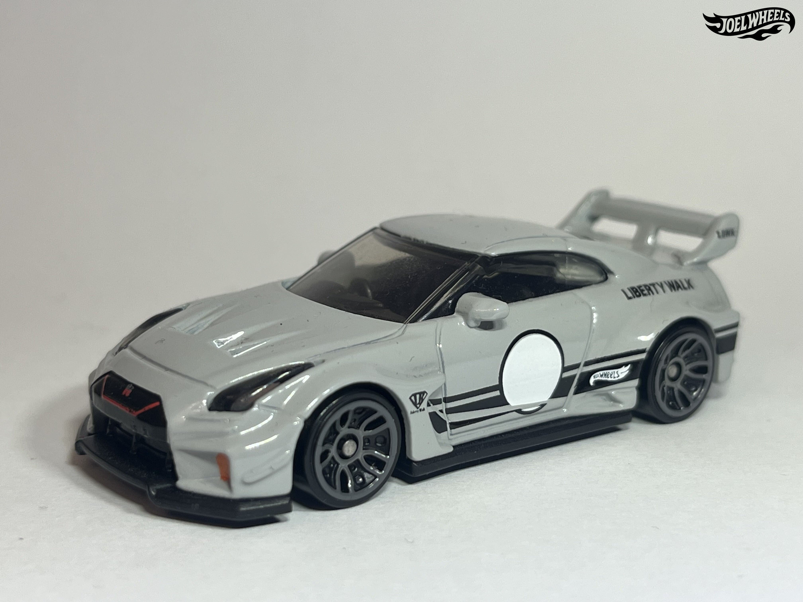
LB-SILHOUETTE WORKS GT NISSAN 35GT-RR VER. 2
2024 - THEN AND NOW - 242/250
LB-Silhouette WORKS GT 35GT-RR VER.2 is the designation for a body kit designed by Liberty Walk, a Japanese aftermarket automotive company, intended to be fitted on the Nissan GT-R. It consists of a front bumper, canards and diffuser, rear bumper and diffuser, a "new style" silhouette rear wing, wide fenders and side skirts and a new hood and trunk. Prices start at ¥3.465m or USD34,020.
This casting is said to be the first casting in a collaboration between Liberty Walk and Hot Wheels. Early prototypes feature "Ver 1" on the base as opposed to "Ver.2".
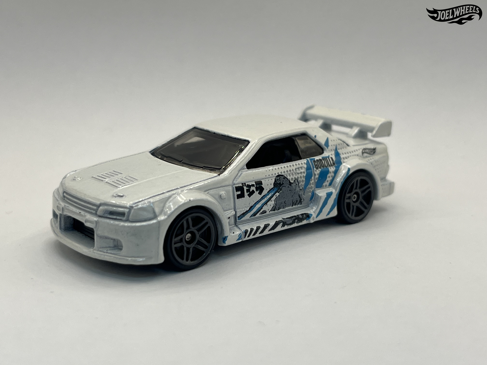
NISSAN SKYLINE GT-R (R32)
2023 - HW J-IMPORTS - 69/250
The Nissan Skyline GT-R is a series of sports cars based on the Nissan Skyline range, produced from 1968 to 2002. The car's third generation, designed by Naganori Ito and internally designated the E-BNR32 (shortened to R32), was introduced in 1989; this was the first car to bear the Skyline GT-R name after a sixteen-year absence. Designed for Group A racing, the car was powered by a 2.6L RB26DETT twin-turbocharged inline-6 putting down power on all four wheels; the car was so dominant in Group A touring car racing an Australian magazine nicknamed the car "Godzilla", a name which has since stuck and is now used to refer to the R3x-series of Nissan Skyline GT-Rs and by extension the later GT-R. Production ended in 1994 with 43,937 produced, with the car replaced by the R33. In recent years, the R32 has become a cult classic due to its appearance in various forms of media and has attained a sizable following among the various echelons of Japanese automobiles.
This casting depicts a Nissan Skyline GT-R with an M's Factory-styled bodykit; the original car was nicknamed the "One-Eyed Jap". Originally named the Nissan Skyline, this casting has been named Nissan Skyline GT-R (R32) (or some variation of it) since 2009, apart from the 2016 Nightburnerz 5-Pack release where it went by its original name of Nissan Skyline. The casting initially had a plastic wing; this was later changed to metal due to cost-cutting.
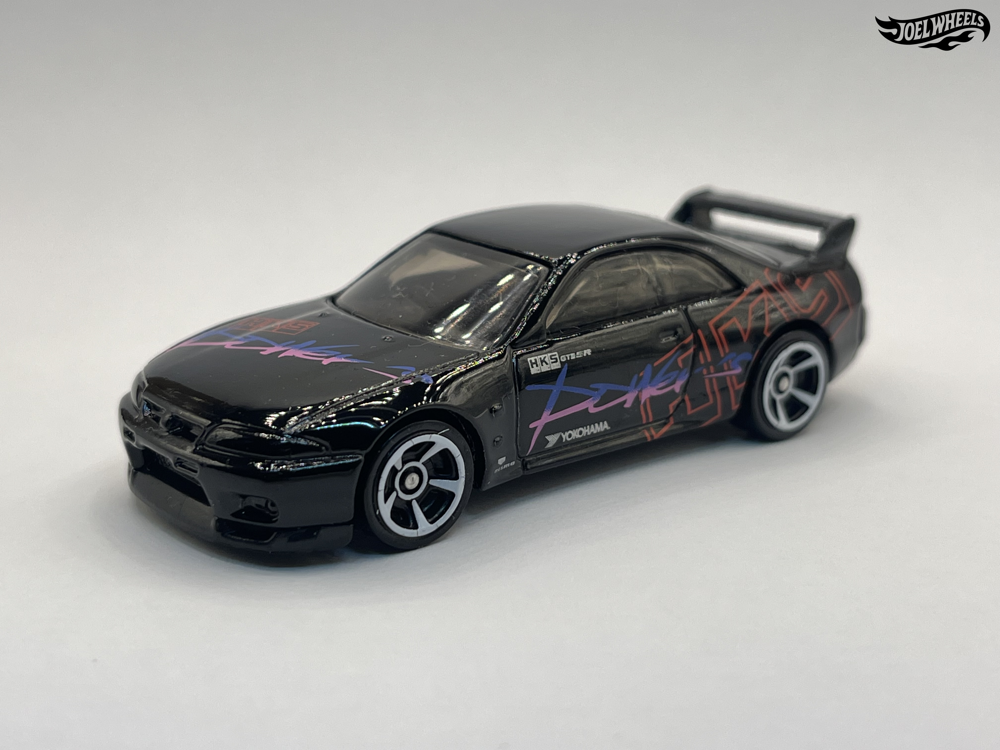
NISSAN SKYLINE GT-R (BCNR33)
2025 - HW: ´70S VS. ´90S - 144/250
The Nissan Skyline GT-R is a series of sports cars based on the Nissan Skyline range, produced from 1968 to 2002. The car's fourth generation, designed by Kozo Watanabe and internally designated the E-BCNR32 (shortened to R33), was introduced in 1995. Essentially a higher-performance version of the standard R33 Skyline, the R33 was powered by a 2.6L RB26DETT twin-turbocharged inline-6, mated to a 5-speed manual; the car's engine was notably very similar to that of its predecessor, the R32, using the same turbochargers and gearbox but had stronger synchros. The car is typically rated at 276 horsepower. Production ended in 1998 with 16,668 produced, with the car replaced by the R34. In recent years, the R33 has become a cult classic due to its appearance in various forms of media and has attained a sizable following among the various echelons of Japanese automobiles.
The base of the casting reads Nissan Skyline GT-R R33, the name the casting was initially released with.
The 2025 release is based on HKS T-002, an R33 built by HKS to break records in various circuits; the car set a 58.7 second lap time at Tsukuba Circuit with Shuji Matsuda at the wheel. The car was then restored in 2019 to be displayed at that year's Tokyo Auto Salon and was later displayed at SEMA 2023.
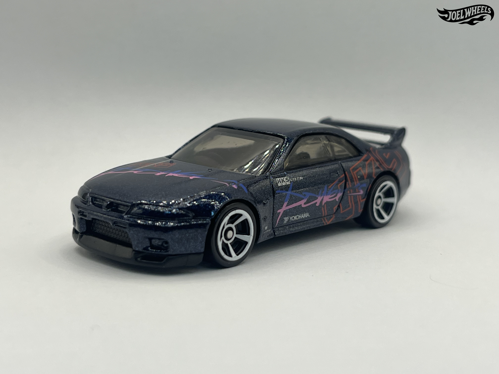
NISSAN SKYLINE GT-R (BCNR33)
2025 - HW: ´70S VS. ´90S - 144/250
The Nissan Skyline GT-R is a series of sports cars based on the Nissan Skyline range, produced from 1968 to 2002. The car's fourth generation, designed by Kozo Watanabe and internally designated the E-BCNR32 (shortened to R33), was introduced in 1995. Essentially a higher-performance version of the standard R33 Skyline, the R33 was powered by a 2.6L RB26DETT twin-turbocharged inline-6, mated to a 5-speed manual; the car's engine was notably very similar to that of its predecessor, the R32, using the same turbochargers and gearbox but had stronger synchros. The car is typically rated at 276 horsepower. Production ended in 1998 with 16,668 produced, with the car replaced by the R34. In recent years, the R33 has become a cult classic due to its appearance in various forms of media and has attained a sizable following among the various echelons of Japanese automobiles.
The base of the casting reads Nissan Skyline GT-R R33, the name the casting was initially released with.
The 2025 release is based on HKS T-002, an R33 built by HKS to break records in various circuits; the car set a 58.7 second lap time at Tsukuba Circuit with Shuji Matsuda at the wheel. The car was then restored in 2019 to be displayed at that year's Tokyo Auto Salon and was later displayed at SEMA 2023.
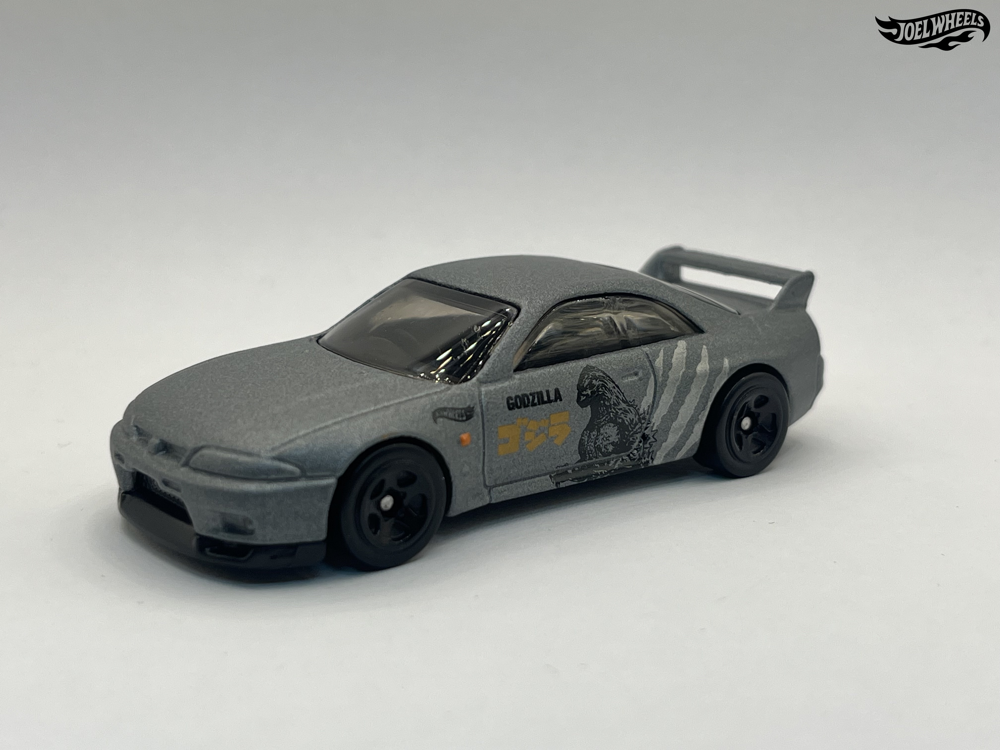
NISSAN SKYLINE GT-R (BCNR33)
2024 - HW J-IMPORTS - 96/250
The Nissan Skyline GT-R is a series of sports cars based on the Nissan Skyline range, produced from 1968 to 2002. The car's fourth generation, designed by Kozo Watanabe and internally designated the E-BCNR32 (shortened to R33), was introduced in 1995. Essentially a higher-performance version of the standard R33 Skyline, the R33 was powered by a 2.6L RB26DETT twin-turbocharged inline-6, mated to a 5-speed manual; the car's engine was notably very similar to that of its predecessor, the R32, using the same turbochargers and gearbox but had stronger synchros. The car is typically rated at 276 horsepower. Production ended in 1998 with 16,668 produced, with the car replaced by the R34. In recent years, the R33 has become a cult classic due to its appearance in various forms of media and has attained a sizable following among the various echelons of Japanese automobiles.
The base of the casting reads Nissan Skyline GT-R R33, the name the casting was initially released with.
The 2025 release is based on HKS T-002, an R33 built by HKS to break records in various circuits; the car set a 58.7 second lap time at Tsukuba Circuit with Shuji Matsuda at the wheel. The car was then restored in 2019 to be displayed at that year's Tokyo Auto Salon and was later displayed at SEMA 2023.
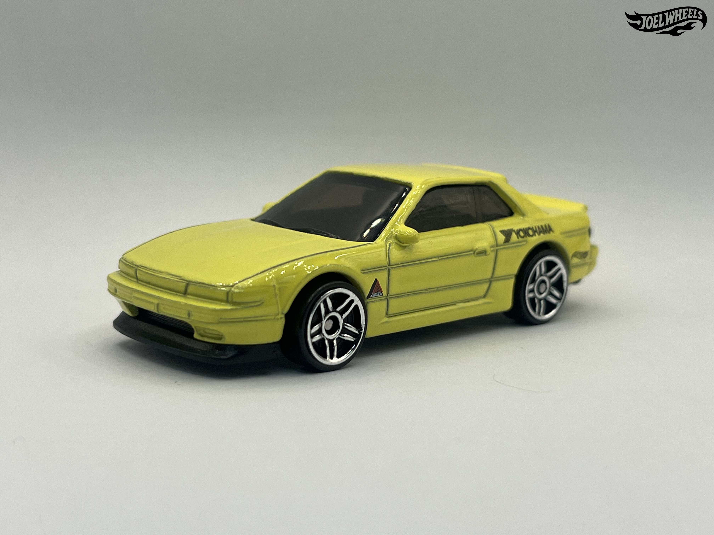
NISSAN SILVIA (S13)
2025 - FAST & FURIOUS 5-PACK
The Nissan Silvia (S13) is based on the S13 generation of the Silvia series dating back to 1965. The S13 coupe and hatch was produced from 1988 to 1994. The coupe version has fixed headlights.
The casting is based on Chris Marion's 240SX with a deco inspired by the S13 that ran during the 1993 IMSA GT Challenge Fuji JGTC. Modifications include custom aftermarket Fifteen52 RSR wheels, Falken tires, Sparco steering wheel, aftermarket bucket seats with a welded roll cage, Rocket Bunny 1.0 rear spoiler, a front end conversion from the original S13 coupe, a SR20DET engine swap from the 180SX, and K&W shocks and springs. Marion sold the car in 2023; it is currently owned by former Hot Wheels designer Jun Imai.
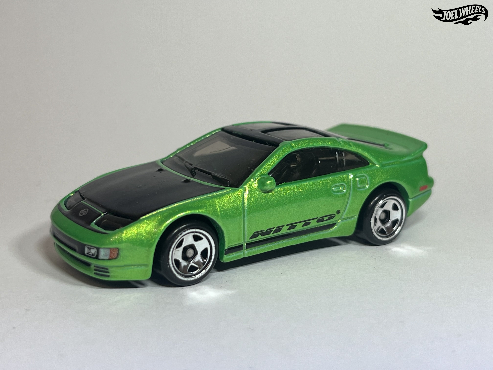
NISSAN 300ZX TWIN TURBO
2024 - 90s street scene - 3/5
The Nissan 300ZX Twin Turbo is a Hot Wheels casting which was designed by Dmitriy Shakhmatov and debuted in the 2019 Nissan mainline segment. It is based on the real-life 'Z32' manufactured between 1989 and 2000.
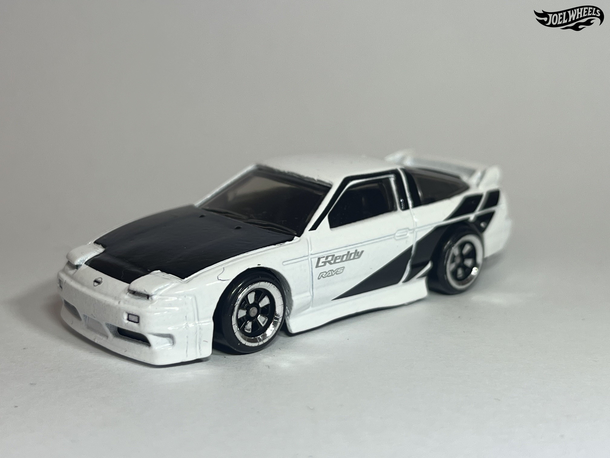
´96 NISSAN 180SX TYPE X
2024 - 90s street scene - 1/5
The Nissan 180SX Type X is a JDM (Japanese Domestic Market) fastback sports coupe produced from 1988 to 1998 by Nissan Motors in Japan. Three levels of the 180SX were produced: Type X, Type S and Type R. The Type S was the non-turbo. The Type R did not have the sport trim of the Type X. Hot Wheels' casting represents the 3rd iteration of the 180SX; the Type X, produced from 1996-1998. The Type X was the turbocharged model with all the sports trim (front lip, rear spoiler, side skirts, rear valance and 4-wheel steering).
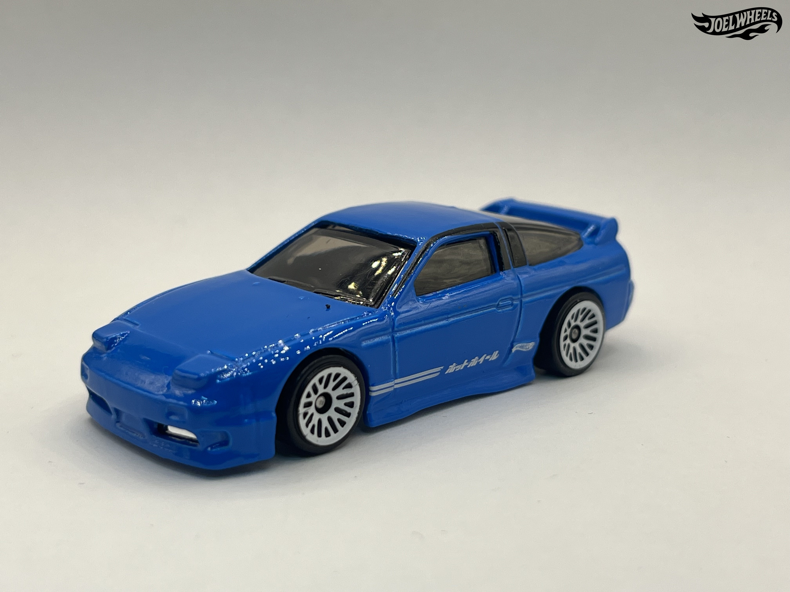
´96 NISSAN 180SX TYPE X
2024 - HW: THE ´90S - 211/250
The Nissan 180SX Type X is a JDM (Japanese Domestic Market) fastback sports coupe produced from 1988 to 1998 by Nissan Motors in Japan. Three levels of the 180SX were produced: Type X, Type S and Type R. The Type S was the non-turbo. The Type R did not have the sport trim of the Type X. Hot Wheels' casting represents the 3rd iteration of the 180SX; the Type X, produced from 1996-1998. The Type X was the turbocharged model with all the sports trim (front lip, rear spoiler, side skirts, rear valance and 4-wheel steering).
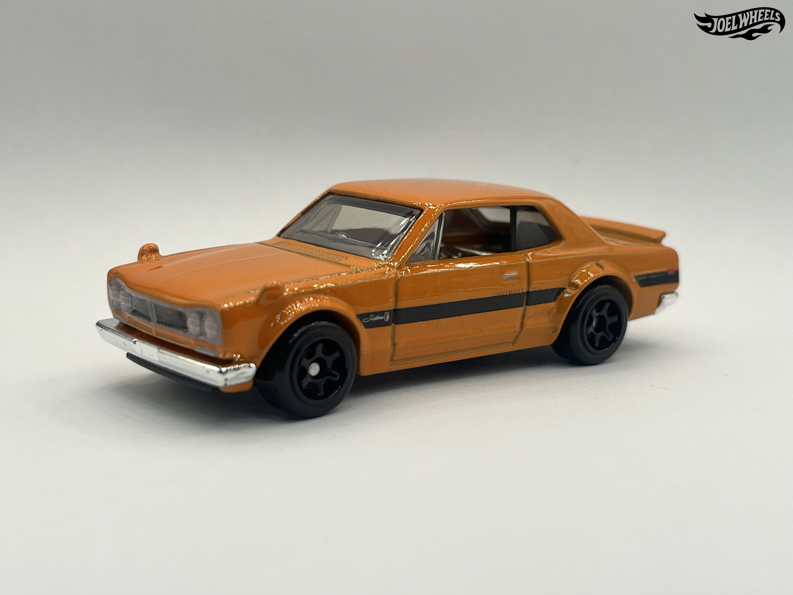
1971 NISSAN SKYLINE H/T 2000 GT-R
2025 - NATIONAL ICONS - 4/5
The Nissan Skyline GT-R is a high-performance version of the Nissan Skyline, introduced in 1969 and produced until 2002 over five generations.
This casting depicts a stock Nissan Skyline 2000 GT-R. This casting is a modification of Jun Imai's Nissan Skyline H/T 2000GT-X casting.
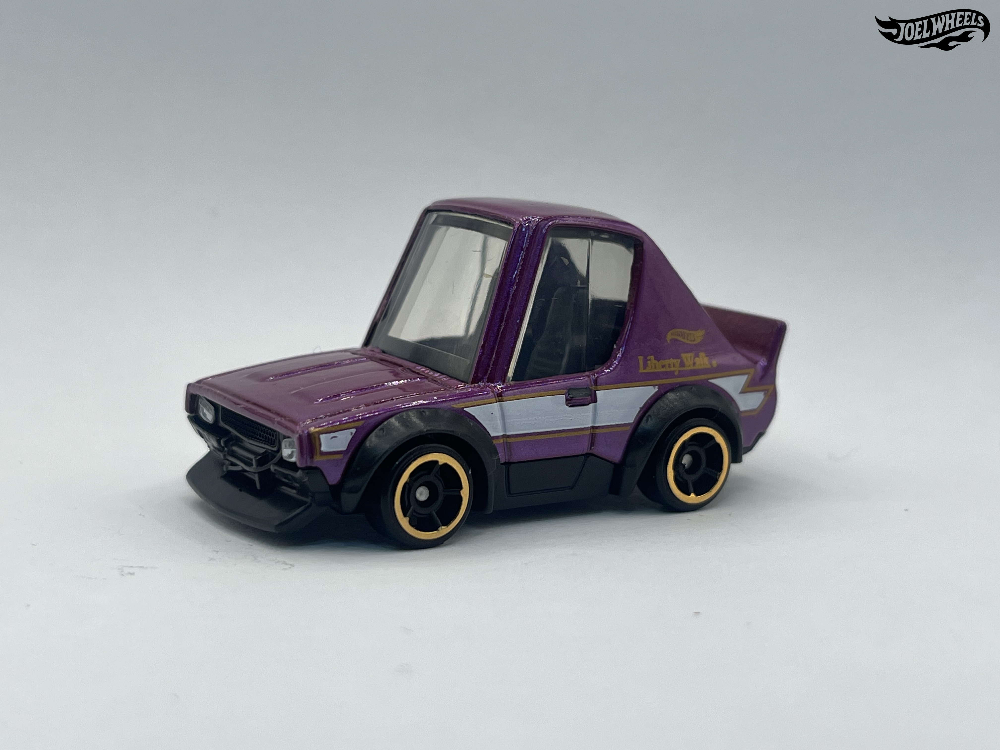
NISSAN SKYLINE 2000GT-R LBWK
2025 - HW J-IMPORTS - 26/250
This casting depicts a 'Tooned version of Wataru Kato's modified Nissan Skyline, featuring squished up & cartoonish proportions.
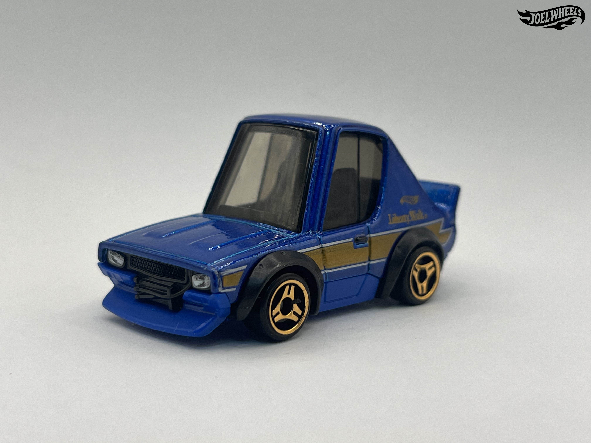
NISSAN SKYLINE 2000GT-R LBWK
2025 - HW J-IMPORTS - 26/250
This casting depicts a 'Tooned version of Wataru Kato's modified Nissan Skyline, featuring squished up & cartoonish proportions.
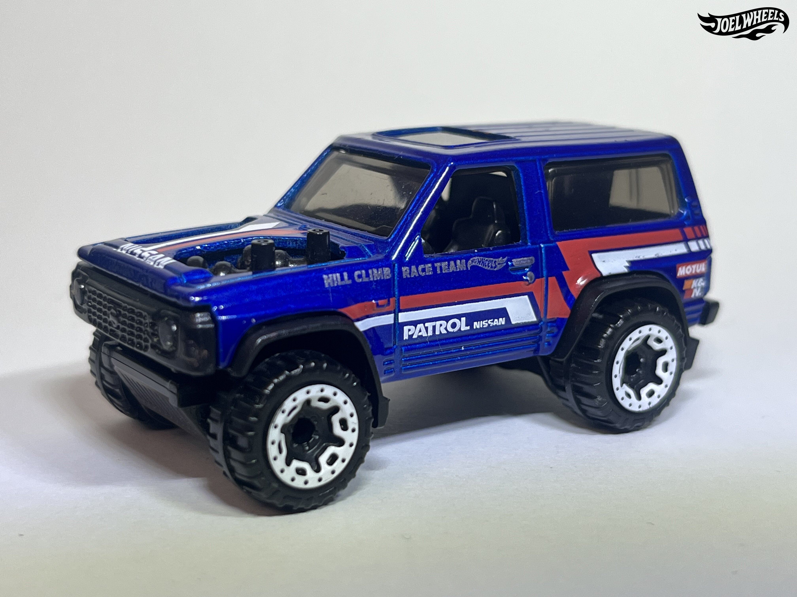
NISSAN PATROL CUSTOM
2023 - HW J-IMPORTS - 20/250
The Nissan Patrol is a series of full-sized sport utility vehicles manufactured by Nissan since 1951, available in short or long wheelbases and with three or five doors. The fourth generation of the Patrol, the Y60, was radically different from its predecessors, being the first Patrol with coil spring suspension. Utility models were also available. The car was sold in Japan as the Safari and as the GQ Nissan Patrol in Australia. Ford also sold a re-badged version in Australia as the Ford Maverick; a Chinese clone known as the Yunbao YB2030 was also produced. Production of this generation of the Patrol ended in 1997.
This casting is based on a heavily modified short wheelbase Y60 Nissan Patrol meant for hill climb racing. It features an open hood with exhausts poking out of it and a similar livery to the Nissan Maxima Drift Car, also designed by Dmitriy Shakhmatov.
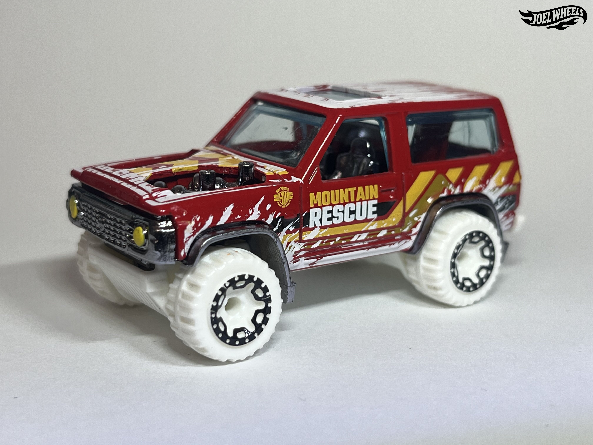
NISSAN PATROL CUSTOM
2024 - HW FIRST RESPONDERS - 34/250
The Nissan Patrol is a series of full-sized sport utility vehicles manufactured by Nissan since 1951, available in short or long wheelbases and with three or five doors. The fourth generation of the Patrol, the Y60, was radically different from its predecessors, being the first Patrol with coil spring suspension. Utility models were also available. The car was sold in Japan as the Safari and as the GQ Nissan Patrol in Australia. Ford also sold a re-badged version in Australia as the Ford Maverick; a Chinese clone known as the Yunbao YB2030 was also produced. Production of this generation of the Patrol ended in 1997.
This casting is based on a heavily modified short wheelbase Y60 Nissan Patrol meant for hill climb racing. It features an open hood with exhausts poking out of it and a similar livery to the Nissan Maxima Drift Car, also designed by Dmitriy Shakhmatov.